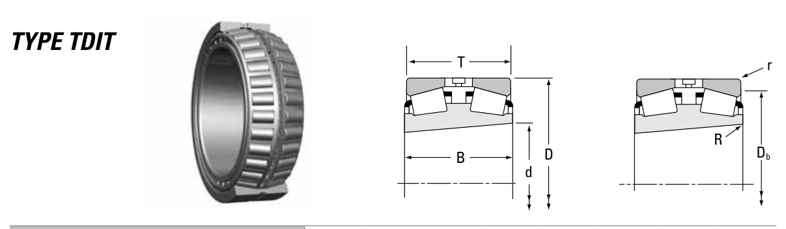

Original catalogue drawing - Timken TRB Catalog, page 642

Scanned from the manufacturer catalogue page listing this part number. All part numbers printed on that table share the same drawing.
Scale cross-section
Blue = inner / outer ring, yellow = rolling element. Drawn to scale from this part's own
dimensions for selection reference only - not a manufacturing or assembly drawing.
Dimension table (mm / inch)
Symbol
Dimension
mm
inch
d
Bore diameter
280
11.0236
D
Outside diameter
409.981
16.141
B
Inner-ring / bearing width
206.375
8.125
T
Overall assembly width
206.375
8.125
r
Chamfer (min)
3.3
0.1299
Notes
Tapered roller bearings are cone / cup assemblies; cone and cup weights are listed separately and the total is their sum. Weights are given in kg. Load ratings are shown in both the original catalogue units and the converted value (1 N = 0.2248 lbf). Data is provided for selection reference only - confirm against the latest official catalogue before ordering.
Main dimensions
Bore d (mm)
280.000
Bore d (in)
11.0236
Outside dia. D (mm)
409.981
Outside dia. D (in)
16.1410
Width B (mm)
206.375
Width B (in)
8.1250
Overall width T (mm)
206.375
Overall width T (in)
8.1250
Load ratings & speeds
Basic dynamic load rating Cr (lbs)
340000
Basic dynamic load rating Cr (N)
1510000
Dynamic rating C1 (N, ISO)
1510000
Dynamic rating C1 (lbf, ISO)
340000
Radial rating C90 (N)
225000
Radial rating C90 (lbf)
50600
Thrust rating Ca90 (N)
149000
Thrust rating Ca90 (lbf)
33400
Factor e
0.39
Factor Y1
1.75
Factor Y2
2.60
Factor K
1.51
Geometry factor G1
1622.7
Geometry factor G2
240.4
Geometry factor Cg
0.1592
Weight
Weight (kg)
78.15
Mounting dimensions (fillets / shoulders)
Shaft fillet R max (mm)
3.3
Housing fillet r max (mm)
3.3
Housing shoulder Db (mm)
379.0
Bearing life (ISO 281 basic rating life)
C / P
Equivalent load P (N)
L10 (106 rev)
L10h at 500 rpm
4
377,500
102
3,386
6
251,667
392
13,083
8
188,750
1,024
34,133
10
151,000
2,154
71,814
15
100,667
8,323
277,449
Basic rating life per ISO 281: L10 = (C/P)10/3 with C = 1,510,000 N. Hours = L10 x 106 / (60n). Life-modification factors for lubrication, contamination and temperature (aISO) are not included.
Source & traceability
Brand
Timken
Source catalogue
Timken Tapered Roller Bearing Catalog (2016)
Catalogue page
p.642 (dimensions)
Series type
TDIT
ISO dynamic rating C1, Timken C90 / Ca90, static rating C0, geometry factors and assembly weight.
Send us the quantity you need and we will come back with price and
lead time, normally within 24 hours. Equivalent parts from other brands can be quoted at the same time.